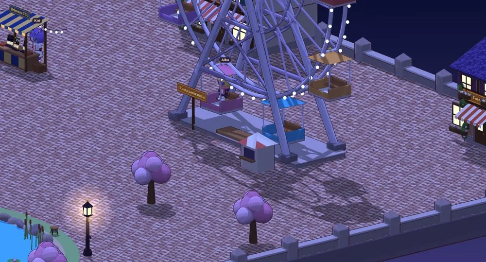
La ruota panoramica
Sali in cabina e guarda il borgo dall'alto. Di sera si accendono i lampioni e le finestre delle case.
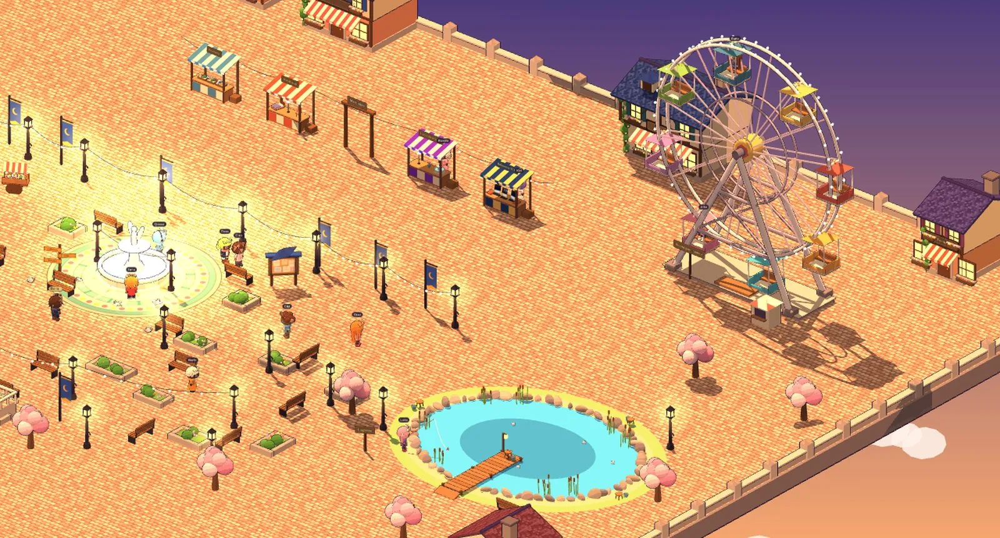
Un borgo online da vivere con gli amici: ti fai la casa, giochi in Sala Giochi e la sera scendi nella Cripta.
Gioca gratisSi gioca dal browser, su telefono e computer, senza installare niente. Dai 14 anni in su.
Una notte è caduta una cometa e il borgo si è riempito di Starlight, bastoncini di luce che ancora oggi brillano in piazza.
Quella luce è filtrata giù dal Cratere, fino al regno del Re senza Luce. Lui l'ha vista per la prima volta, e l'ha voluta tutta per sé.
I suoi servitori sono saliti a rubarla. Da allora i lampioni tremano e la cometa nel Cratere è quasi fredda.
Una vecchia leggenda parla dei Portatori di Lanterna, che scendono nel buio e riportano indietro la luce. Adesso tocca a te.
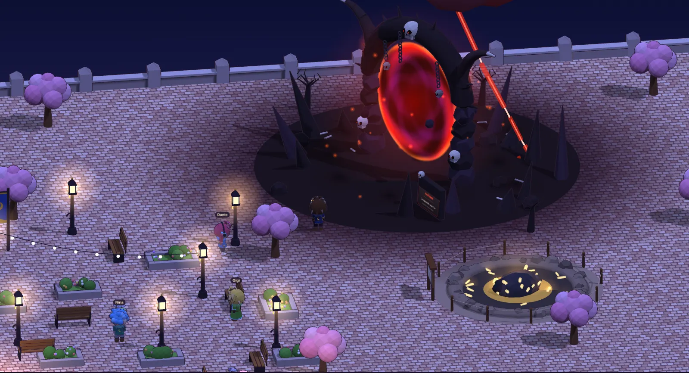
Il portale si apre in un angolo della piazza, accanto al Cratere. Sulla lapide c'è scritto Lasciate ogni speranza, voi ch'entrate.
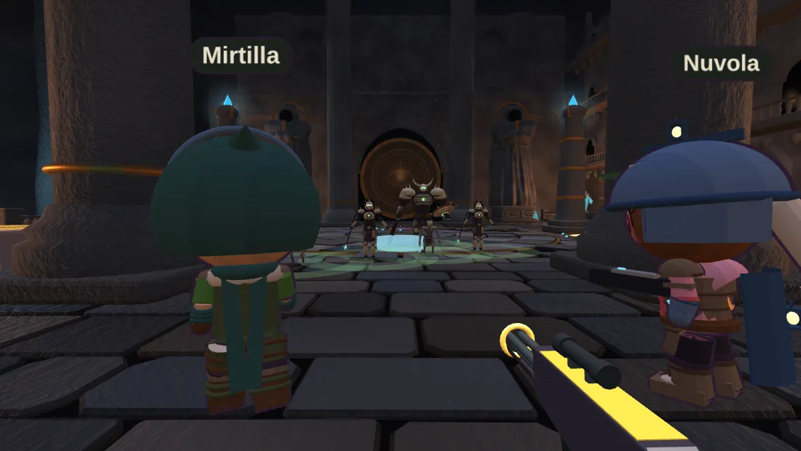
Un raid in prima persona da giocare in squadra. È difficile apposta: si impara una sala alla volta.
Cammini tra le bancarelle, ti siedi sulle panchine, chiacchieri in chat e saluti chi passa. Poi torni a casa e la arredi come vuoi.

Sali in cabina e guarda il borgo dall'alto. Di sera si accendono i lampioni e le finestre delle case.
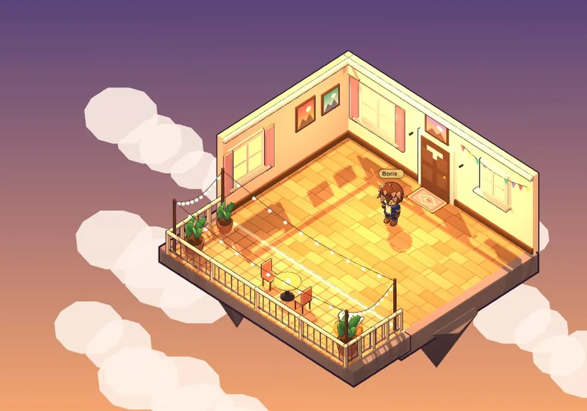
Compri i mobili al negozio, li sistemi dove vuoi e inviti gli amici: suonano il campanello e tu decidi se aprire.
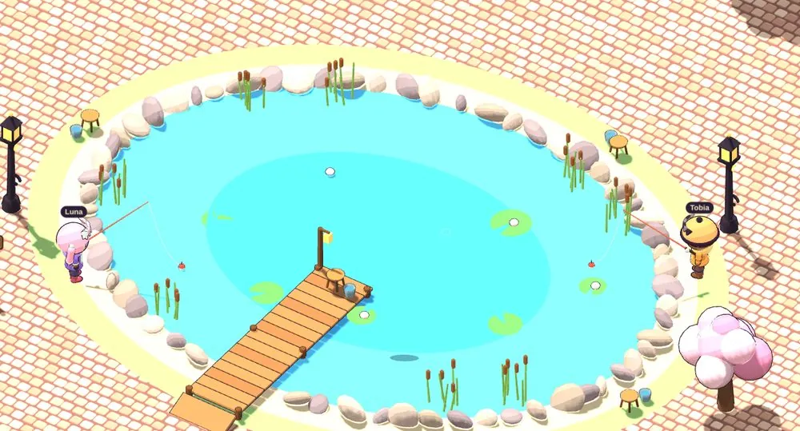
Otto specie di pesci da prendere, da vendere in pescheria o da trasformare in trofei per la casa.
Chi è in sala con te gioca con te, in tempo reale. Se sei da solo, sfidi il computer.
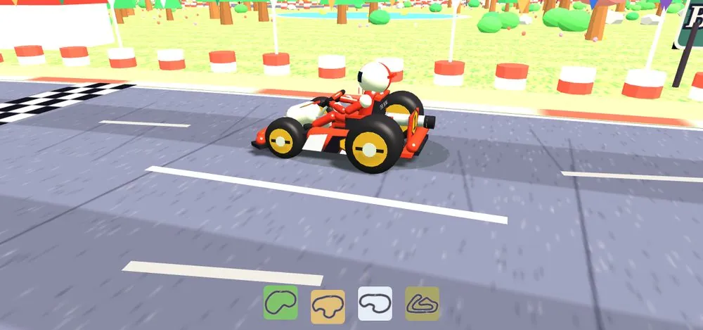
Quattro piste e gare a tutto gas contro gli amici, curva dopo curva.
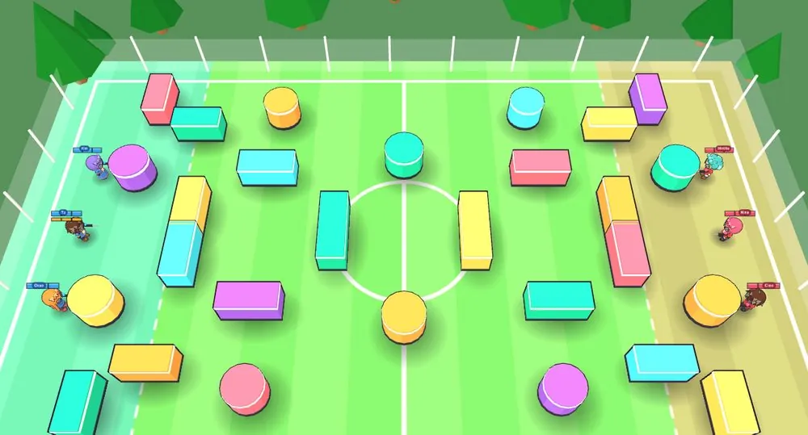
Due squadre, ripari colorati, e alla fine si vede chi ha sporcato di più.
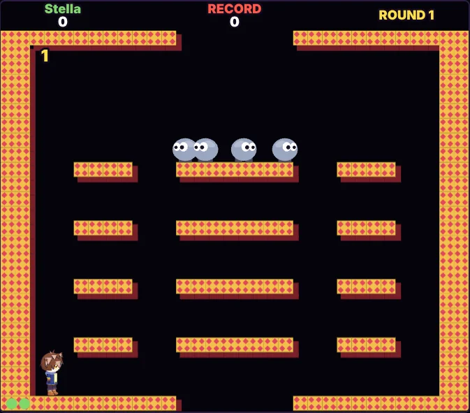
Il cabinato arcade: chiudi i nemici nelle bolle e falli scoppiare, da solo o in due. I personaggi sono i vostri avatar.
Il gioco di carte collezionabili del borgo. Apri i pacchetti, costruisci il mazzo e sfida gli altri al tavolo. In mezzo alla piazza c'è anche Laugh Tale Collectibles, il negozio di carte.
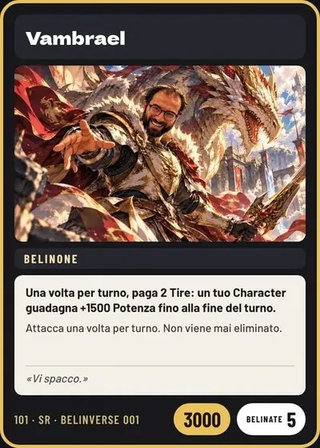
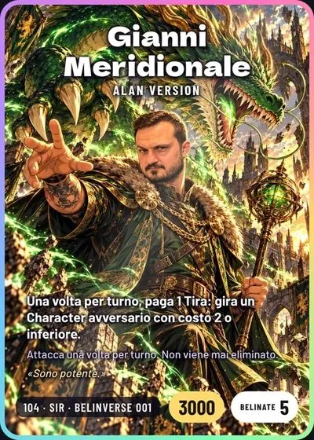
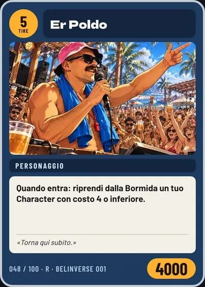
Vi vedete camminare, vi scrivete in privato, vi visitate le case e giocate le stesse partite. Nessuna iscrizione: scegli un nome, crei il tuo avatar e sei dentro.
Entra come ospite adesso. Le app per telefono arrivano presto.
Gioca gratis